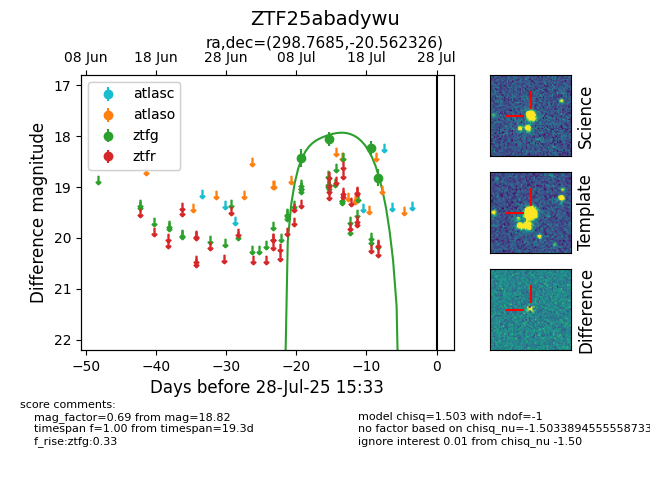

Target ZTF25abadywu at 2025-07-28 15:33, see:
FINK: fink-portal.org/ZTF25abadywu
Lasair: lasair-ztf.lsst.ac.uk/objects/ZTF25abadywu
ALeRCE: alerce.online/object/ZTF25abadywu
alt names
ZTF25abadywu (ztf,fink)
coordinates:
equatorial (ra, dec) = (298.7685,-20.56233)
galactic (l, b) = (20.6784,-22.86536)
photometry
last ztfg=18.82
4 ztfg detections
